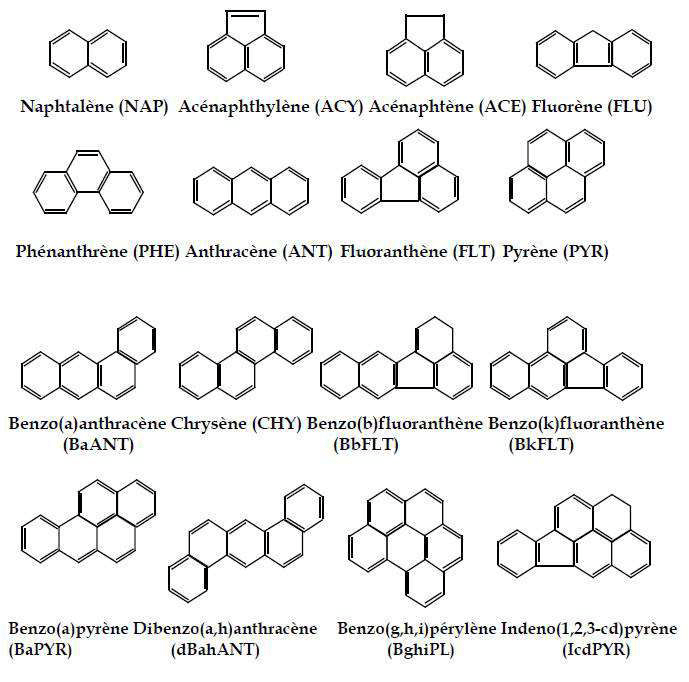

Les perturbateurs endocriniens (HAPs) représentent une catégorie d'agents de l'environnement qui peuvent influer sur la fertilité des femelles en altérant le développement ovarien et leur fonction, par des effets oestrogéniques, anti-oestrogéniques et / ou anti-androgéniques (Uzumcu & Zachow, 2007). Des données récentes (Anway et al, 2005 ; Newbold et al, 1998 ; Newbold et al, 2000) indiquent non seulement que l'exposition à des perturbateurs endocriniens au cours de la période de développement provoque des anomalies de la reproduction à l'âge adulte chez les Mammifères, mais aussi que ces anomalies sont transgénérationnelles.
